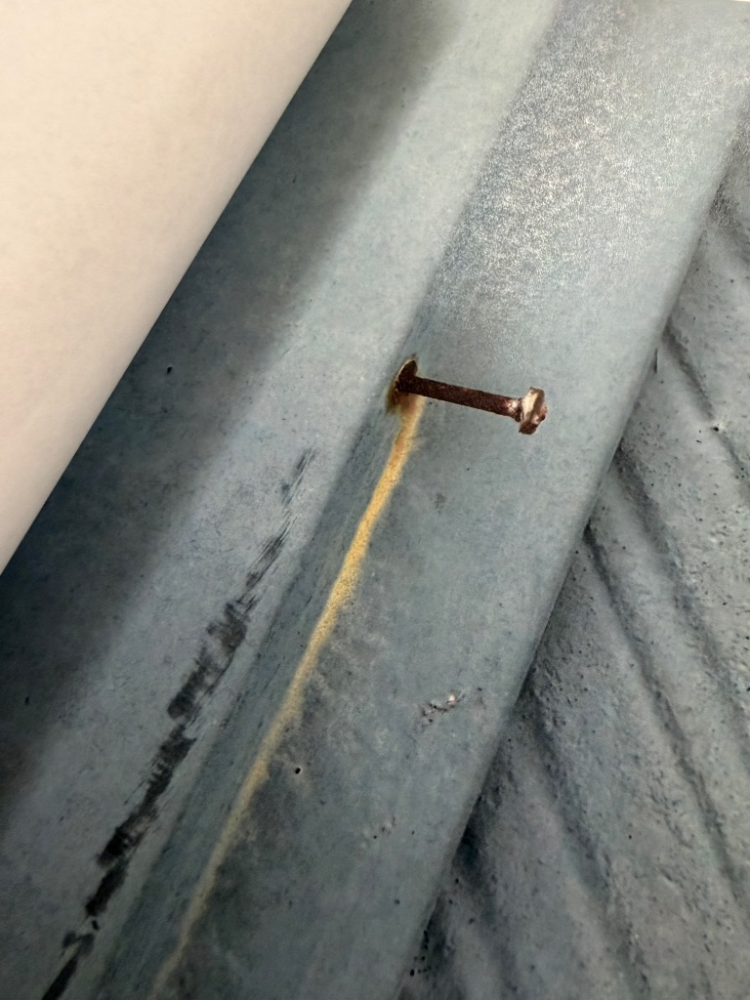

屋根板金の浮きを放置すると？修理費用が10倍になる前に【写真付き】
公開日：2026年2月17日
「屋根板金が浮いてる？まぁ大丈夫でしょ」←これが大間違い。放置すると修理費用が3万円→30万円に膨らみます。

板金の浮きと釘の錆び - 放置すると雨漏りの原因に
こんな症状ありませんか？
- 台風の後、屋根から「バタバタ」と音がする
- 屋根の板金が少し浮いているように見える
- 「そのうち直せばいいか」と先延ばしにしている
屋根の板金（棟板金・谷樋板金）が浮いているのを見つけたら、それは「黄色信号」です。
町田市や横浜青葉区、麻生区など、築15年以上の住宅が多いエリアでは、この症状が非常に多く見られます。「少しだけだから」と放置した結果、修理費用が10倍以上に膨らんだケースを何度も見てきました。
目次
屋根板金とは？どこにある？
まず、「屋根板金」がどこにあるのかを確認しましょう。主に3箇所あります。
① 棟板金（むねばんきん）
屋根の一番高い部分（棟）を覆っている金属の板です。最も浮きやすく、雨漏りの原因No.1。
📍 特徴：屋根の頂上にある / 風の影響を最も受けやすい / 釘で固定されている
② 谷樋板金（たにどいばんきん）
屋根の「谷」部分（2つの屋根面が交わる谷状の場所）に設置された板金。雨水が集中する場所なので、劣化しやすい。
📍 特徴：雨水が集まる / 錆びやすい / 稲城市や日野市など樹木が多いエリアで詰まりやすい
③ 水切り板金
外壁と屋根の境目、窓の上下などに設置された板金。雨水を外に逃がす役割。
板金が浮く3つの原因
なぜ板金は浮くのか？主な原因は以下の3つです。
1 釘の浮き・抜け
最も多い原因。棟板金は釘で固定されていますが、年月とともに木材が痩せ、釘が浮いてきます。
なぜ起こる？
- • 下地の木材（貫板）が経年劣化で収縮
- • 雨風で板金が揺れ、釘が少しずつ抜ける
- • 築10〜15年で発生しやすい
2 強風・台風による変形
台風や強風で板金が持ち上げられ、変形します。麻生区や町田市など風の強いエリアで多発。
症状：
- • 台風の後、「バタバタ」と音がする
- • 板金が波打っている
- • 一部が飛ばされている
3 サビ・腐食
板金自体や釘がサビて強度が低下。特に谷樋板金は水が溜まりやすくサビやすい。
放置すると起こる4つの被害【写真で解説】
「少し浮いてるだけ」が命取り！
板金の浮きを放置すると、以下のような深刻な被害が連鎖的に発生します。修理費用は早期対応の10倍以上になることも。
1 雨漏り発生
浮いた隙間から雨水が侵入。最初は少量でも、徐々に天井のシミ→雨漏りへ進行します。
🕐 進行スピード：
- 1〜3ヶ月：天井裏に水が溜まり始める（目に見えない）
- 6ヶ月〜1年：天井にシミが出現
- 1〜2年：ポタポタと雨漏り
2 下地木材の腐食
板金の下にある木材（貫板）が雨水で腐り、ボロボロに。釘が効かなくなり、板金が飛ぶ危険も。
⚠️ 実際の被害例（横浜青葉区のケース）：
「板金が少し浮いてる」状態を2年放置→台風で板金が飛ばされ、隣家の車を直撃。修理費用＋損害賠償で総額120万円の出費に。
3 屋根材全体の劣化
雨水が屋根材の下に回り込み、屋根材全体が劣化。最悪の場合、屋根の全面葺き替えが必要に。
💰 修理費用の比較：
- • 早期対応（板金交換のみ）：3〜10万円
- • 放置後（屋根全面葺き替え）：80〜150万円
4 室内被害（カビ・天井の張り替え）
天井裏に水が溜まり続けると、カビが発生し、健康被害も。天井材の張り替えも必要に。
🏥 健康リスク：
- • アレルギー症状（咳・くしゃみ）
- • 喘息の悪化
- • シックハウス症候群
修理費用の比較：早期 vs 放置後
早く対応すれば90%以上の費用を節約できる！
板金交換のみ
3〜10万円
- 棟板金の交換
- 下地木材の交換
- 釘・ビスの打ち直し
- 工期：1〜2日
屋根全面修理
80〜150万円
- 屋根材の全面葺き替え
- 野地板（下地）の交換
- 天井材の張り替え
- 工期：1〜2週間
実際の費用例（町田市 H様邸）
「板金が少し浮いてる」状態を3年放置した結果…
- • 雨漏り発生 → 天井にシミ
- • 屋根裏の木材が腐食
- • 最終的な修理費用：132万円
- • 早期対応なら8万円で済んだケース
自分でできるセルフチェック方法
屋根に登るのは危険ですが、地上から確認できることもあります。
チェックリスト
-
1
風の強い日に音がする
「バタバタ」「ガタガタ」という音 → 板金が浮いている証拠
-
2
屋根の頂上が波打っている
地上から見て、棟板金が平らでない → 浮き・変形している
-
3
釘が見える
本来、釘は板金に隠れているはず。見えている = 浮いている
-
4
庭に釘が落ちている
台風後に錆びた釘が落ちている → 板金が抜けかけている
-
5
築15年以上経過
日野市や稲城市など築年数の古い住宅が多いエリアは要注意
注意：屋根に登るのは危険！
板金の状態を確認するために屋根に登るのは絶対NG。転落事故が多発しています。必ずプロに点検を依頼してください。
よくある質問（FAQ）
Q1: 板金の浮きは自分で直せますか？
A: おすすめしません。かえって悪化する可能性があります。
釘を打ち直すだけでは根本解決になりません。下地木材が腐っている場合、釘が効かず、すぐに浮いてしまいます。プロに依頼して下地から交換するのが確実です。
Q2: 板金交換の工期はどれくらい？
A: 通常は1〜2日で完了します。
棟板金のみの交換であれば、足場が不要な場合が多く、1日で完了することも。下地木材も交換する場合は2日間程度です。雨の日は作業できません。
Q3: 火災保険は使えますか？
A: 台風・強風が原因なら使える可能性があります。
火災保険の「風災補償」が適用される場合があります。ただし、経年劣化が原因の場合は対象外です。まずは無料点検で原因を特定しましょう。
Q4: 今すぐ修理しなくても大丈夫？
A: いいえ、放置すればするほど被害が拡大します。
「少しだけだから」と先延ばしにした結果、修理費用が10倍以上に膨らんだケースを何度も見てきました。早めの対応が最も費用を抑える方法です。
まとめ：板金の浮きは「黄色信号」。今すぐ点検を
この記事のポイント
- 板金が浮く原因：釘の浮き、強風、サビ・腐食
- 放置すると：雨漏り→下地腐食→屋根全面修理（80〜150万円）
- 早期対応なら：3〜10万円で修理可能（90%以上の節約）
- セルフチェック：音がする、波打っている、釘が見える
屋根板金の浮きは、「黄色信号」です。今すぐ大きな問題はなくても、放置すれば必ず悪化します。
町田市・横浜青葉区・麻生区・稲城市・日野市など、築15年以上の住宅が多いエリアでは特に注意が必要です。「少しだけだから大丈夫」が最も危険。早めの点検で、大切な家と家族を守りましょう。
今すぐ無料で屋根診断
屋根の写真を送るだけ！板金の状態を無料で診断します。
「少し浮いてるかも？」と思ったら、まずは相談を。
📍 町田市・横浜青葉区・麻生区・稲城市・日野市など、神奈川・東京エリア対応
✅ 点検無料 ✅ 見積もり無料 ✅ 追加請求なし ✅ 最長10年保証